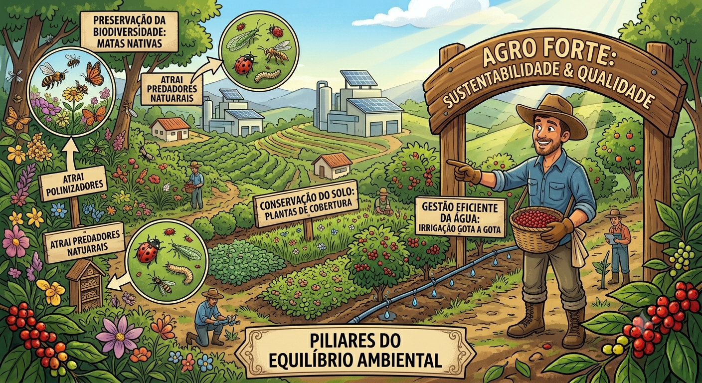
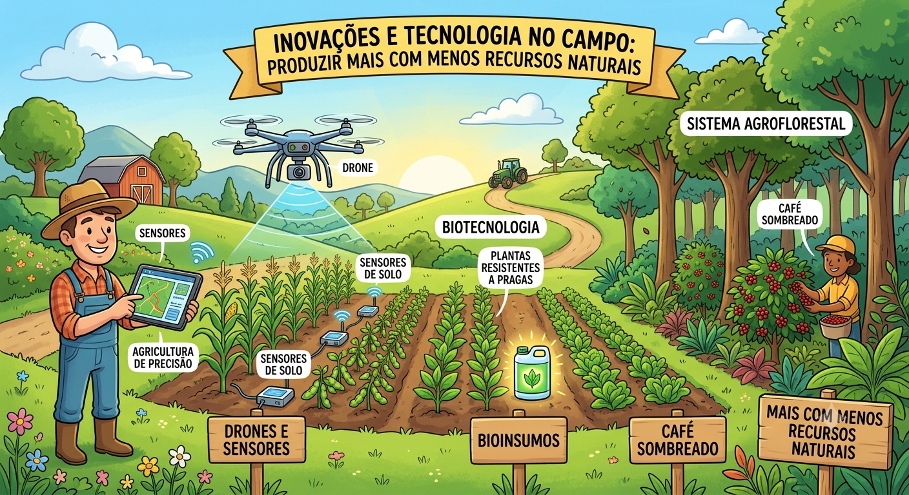
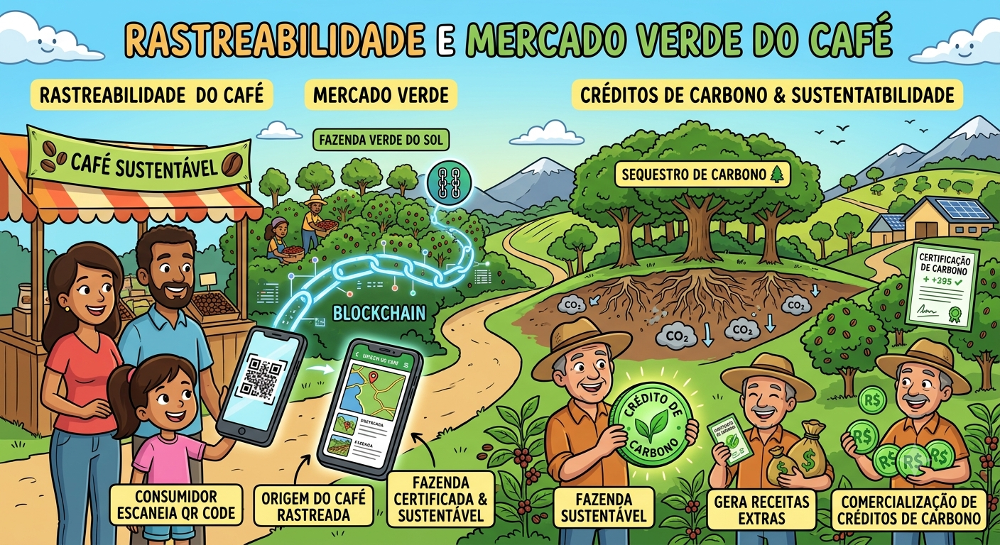

Transição para a Sustentabilidade
Impulsionada por mudanças climáticas e exigências do mercado internacional,
a cafeicultura tradicional evoluiu para o modelo de "agro forte", adotando Boas Práticas Agrícolas (BPA) e certificações globais para garantir o futuro das lavouras.

Pilares do Equilíbrio Ambiental
O setor se sustenta na conservação do solo (uso de plantas de cobertura),
na gestão eficiente da água (irrigação gota a gota e reutilização) e na preservação da biodiversidade (manutenção de matas nativas que atraem polinizadores e predadores naturais).

Inovações e Tecnologia no Campo
O uso de agricultura de precisão (sensores e drones), biotecnologia
(bioinsumos e plantas resistentes a pragas) e os Sistemas Agroflorestais (café sombreado) permitem produzir mais utilizando menos recursos naturais.

Rastreabilidade e Mercado Verde
Tecnologias como o blockchain permitem ao consumidor rastrear a origem do café,
enquanto fazendas sustentáveis geram receitas extras através da comercialização de créditos de carbono pelo sequestro de gases poluentes.